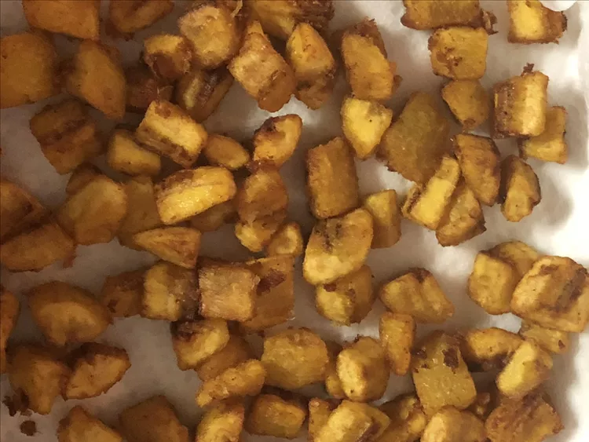

Kelewele

Description
Kelewele, or spicy fried plantains, are a favorite snack in the West African country of Ghana.
Tip: It is best to use yellow ripe plantains in preparing the dish.
Ingredients
-
1 quart vegetable oil for frying, or as needed
-
1 small onion, cut into chunks
-
3 tablespoons grated fresh ginger, or more to taste
-
2 whole cloves, crushed
-
5 ripe plantains, diced into 1/3-inch chunks
-
3 tablespoons ground chile pepper
-
Salt to taste
Steps
-
Heat oil in a deep-fryer or large saucepan to 350 degrees F (175 degrees C).
-
While the oil is heating, purée onion in a blender until smooth. Stir in ginger and cloves.
-
Place plantains in a bowl and pour onion mixture over top. Add chile pepper and salt; mix until plantains are coated.
-
Fry plantains in the hot oil until browned on all sides, about 5 minutes. Remove with a slotted spoon and drain on a paper towel-line plate.